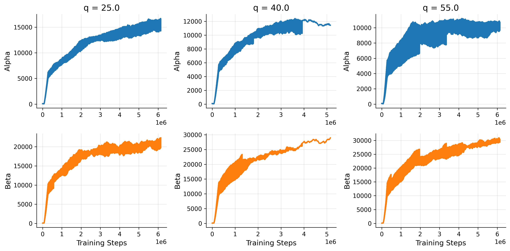
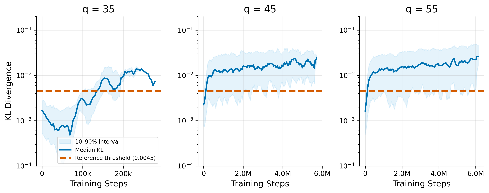
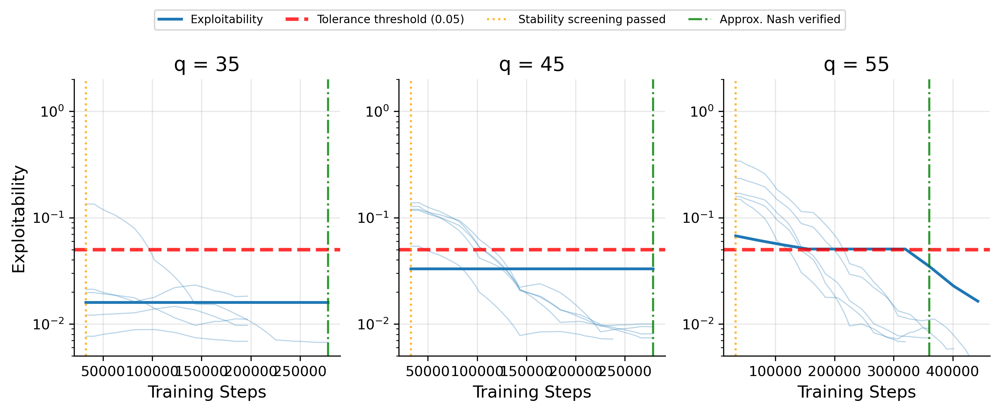
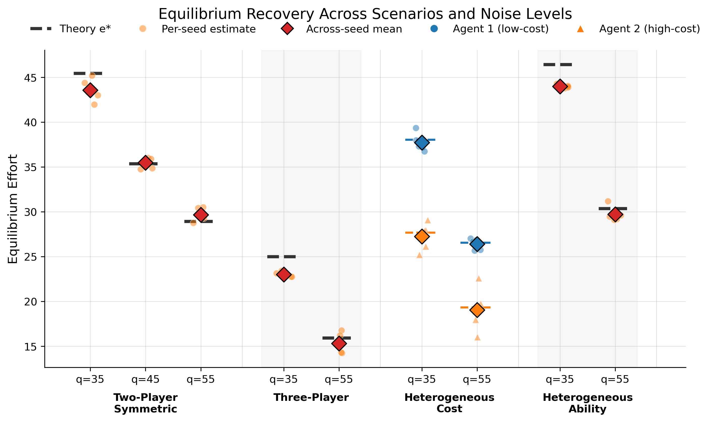
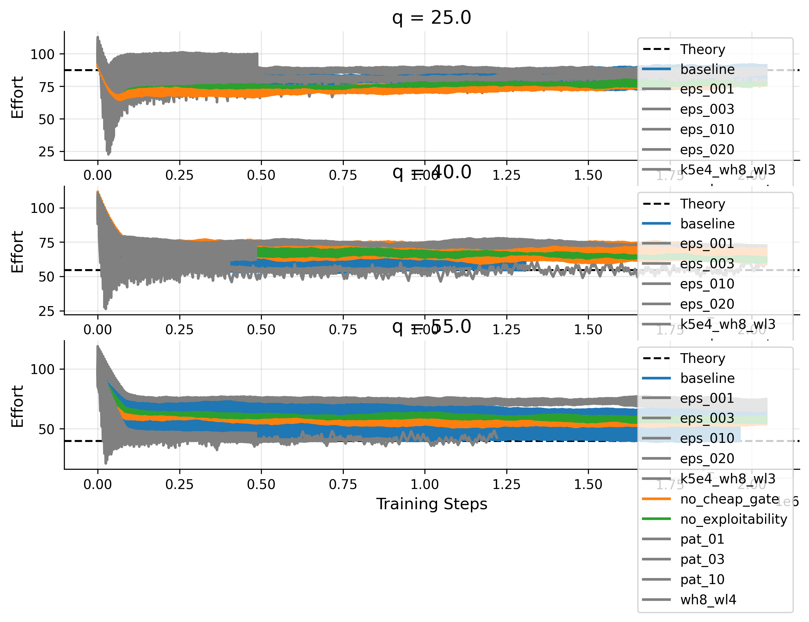
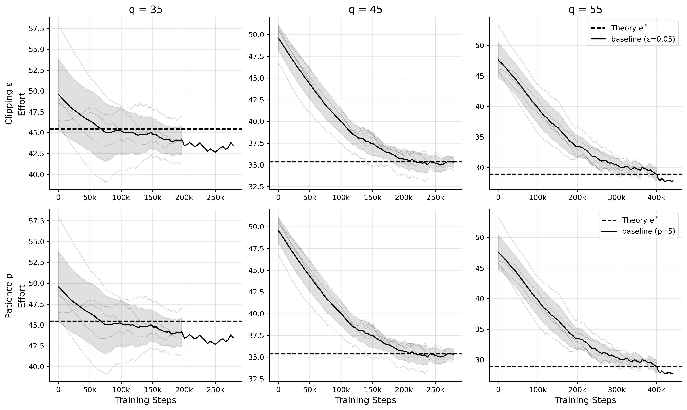
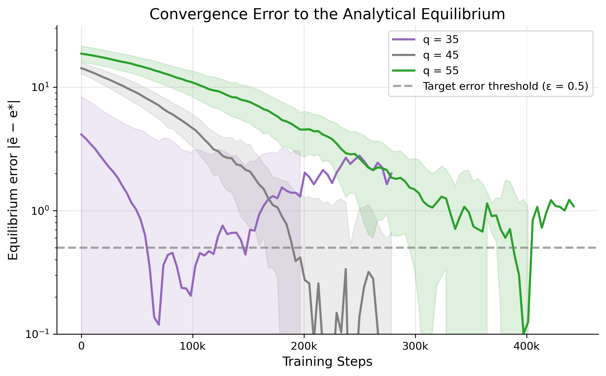

"Can a PPO agent discover the Nash equilibrium of a tournament game — without ever being told what it is?"
Two players choose effort levels e₁, e₂. A noisy comparison determines the winner: the higher eᵢ + εᵢ wins prize w_H, the loser gets w_L. Noise εᵢ ~ Uniform[-q, q] controls how random the outcome is.
Lazear & Rosen (1981) showed the unique symmetric Nash equilibrium is:
The question: can a model-free RL agent rediscover this from experience alone?
| Category | Parameter | Value |
|---|
Three components work together to find and verify Nash equilibrium:



The main result: TEL-PPO and gradient descent both converge to the theoretical Nash equilibrium e* across noise levels.
| Scenario | q | Method | Mean ± std | |ē − e*| | Rel. Error | Exploit. | Sym. Gap | Steps |
|---|

Each TEL-PPO component contributes measurably. Hyperparameter sensitivity is bounded.


